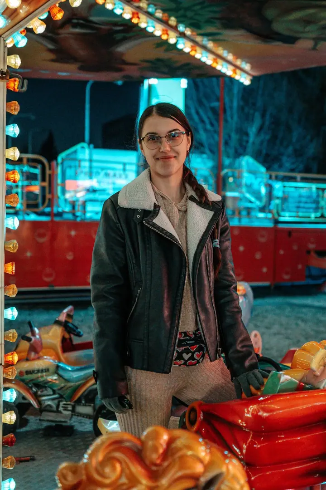
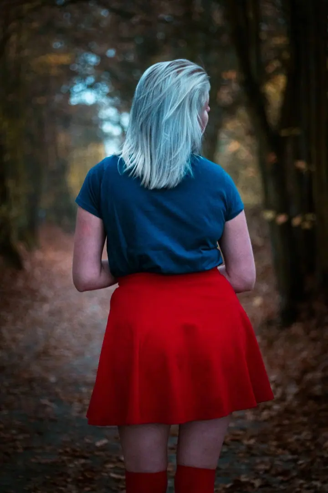
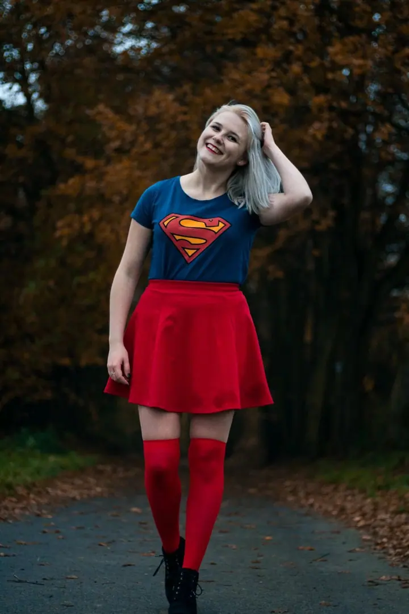
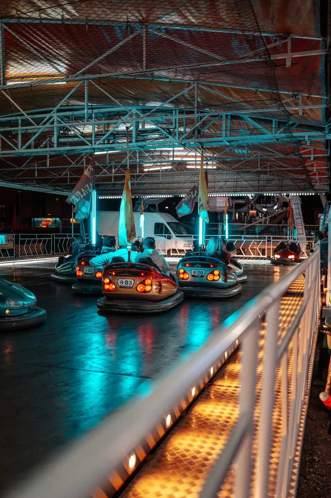
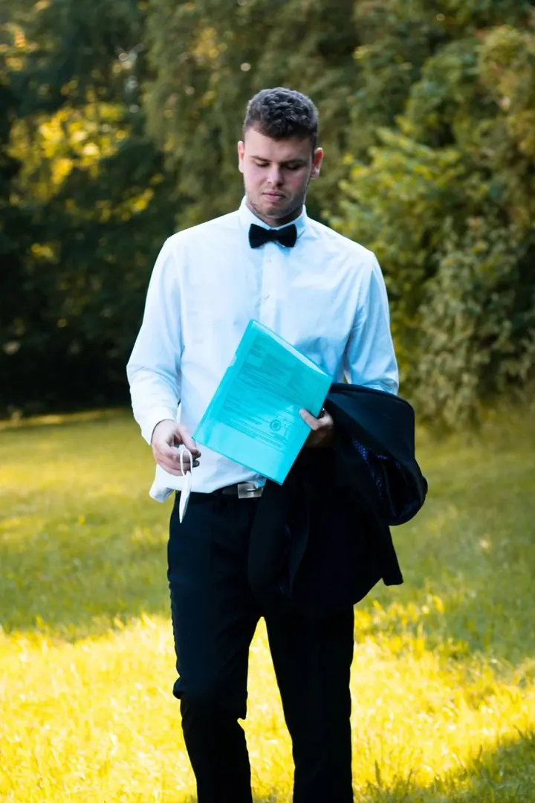
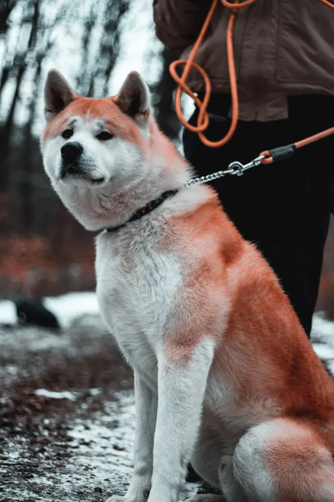
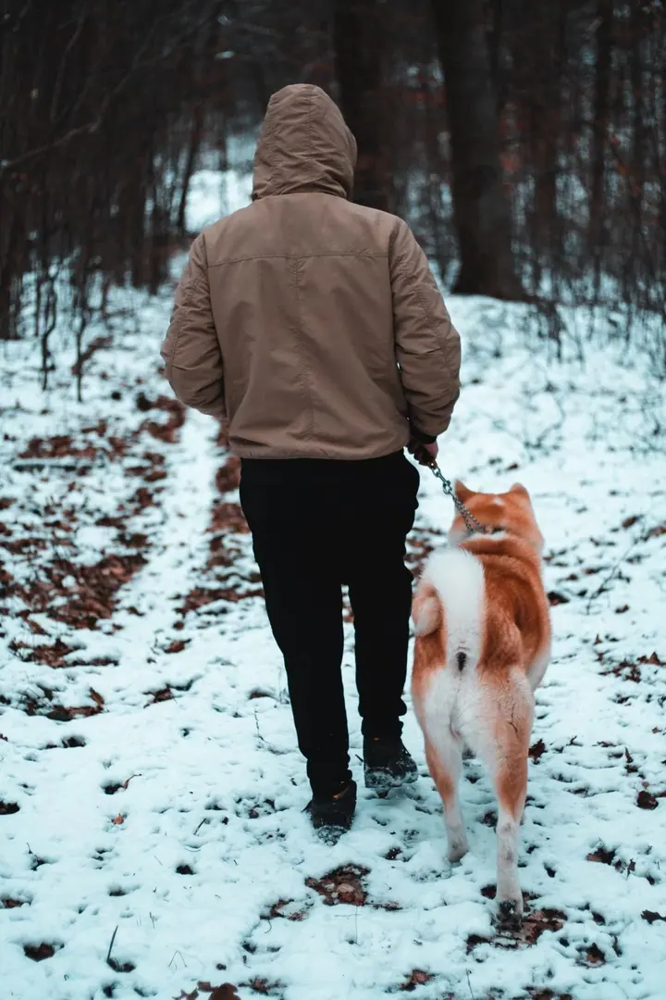
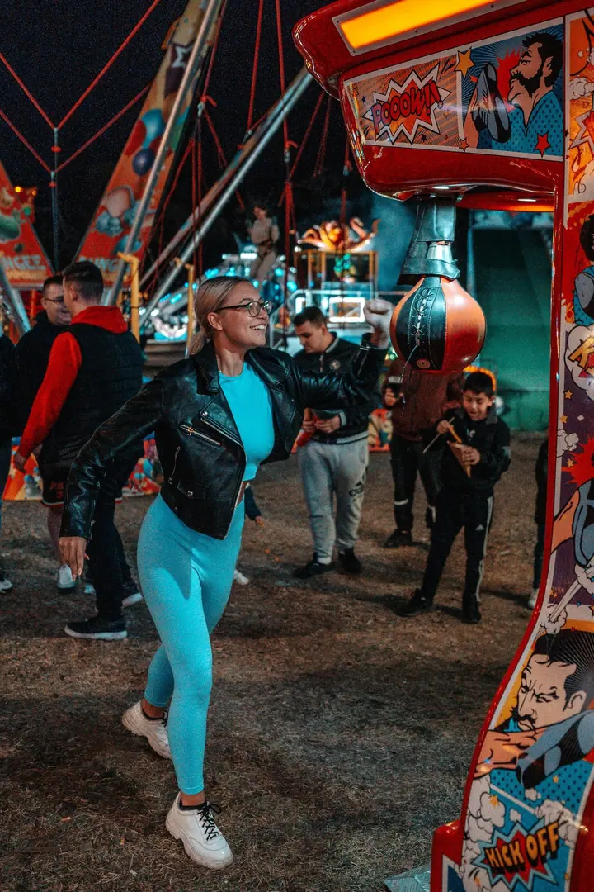

01 / 04
Focení eventů a akcí
Fotím festivaly, majálesy, sportovní akce i firemní události. Snažím se zachytit atmosféru a emoce tak, aby z fotek bylo cítit, jaké to tam bylo.
Zeptat se na termín→







Akce, lidé a příběhy v obraze
Zeptat se na termín →(01) Ahoj
Jmenuji se Vojtěch Klega, pocházím z Ostravy a jsem fotograf , kameraman a střihač. Fotím a natáčím akce, festivaly i svatby . Rád s vámi proberu, jak vaši představu proměnit ve skutečný výsledek.
(02) Co dělám
01 / 04
Fotím festivaly, majálesy, sportovní akce i firemní události. Snažím se zachytit atmosféru a emoce tak, aby z fotek bylo cítit, jaké to tam bylo.
Zeptat se na termín→02 / 04
Portréty venku v přírodě, ve městě i v noci pod světly pouti. Každý záběr pečlivě připravím a dotáhnu v úpravách.
Zeptat se na termín→03 / 04
Postarám se o fotky i video z vašeho svatebního dne. Od obřadu po společné fotky s rodinou.
Zeptat se na termín→Dále nabízím
Specializuji se na krátká ukázková videa z událostí o délce 4 až 6 minut, natočím ale i svatbu, ples nebo maturitní video. Stříhám také videa pro youtubery a tvořím k nim miniatury, které lákají ke kliknutí.
↗(04) Postup
Od první zprávy po hotovou galerii.
Krok 1 z 4
Zavolejte nebo napište, o jakou akci jde, kdy a kde se koná a jestli chcete fotky, video, nebo obojí.
Krok 2 z 4
Společně si ujasníme, co má výsledek ukázat a pro koho bude. Podle toho naplánuji, co a jak natočit.
Krok 3 z 4
Na místě se snažím zachytit atmosféru, emoce a hlavní momenty, aby byla výsledná fotka nebo video co nejautentičtější.
Krok 4 z 4
Fotky upravím a video pečlivě sestříhám tak, aby zaujalo od úvodu až do konce. Hotové materiály vám pošlu ke stažení.
Příběhy, které se dají vyprávět obrazem
(05) Za objektivem
Fotografování a tvorbě videí se aktivně věnuji od roku 2018 a dnes se tím živím. Vždycky mě bavilo, jaké příběhy se dají vyprávět obrazem, a proto se tomu věnuji naplno.
Nejčastěji natáčím krátká ukázková videa a aftermovie z událostí a k nim fotím. Byl jsem třeba na Majálesu, Wings for Life World Run nebo FM City Festu. Spolupracuji s hokejovým klubem AZ Havířov a s youtubery, jejichž videa natáčím nebo stříhám.
Než začnu, chci pochopit, co od fotek nebo videa čekáte. Každý záběr pečlivě připravím a upravím, aby výsledek zaujal hned od prvního záběru.
Vojtěch
Vojtěch Klega · Fotograf, kameraman a střihač
Ano. Nejčastěji natáčím krátká videa z akcí, ale postarám se i o svatbu, ples, maturitní video nebo jinou událost.
Nejčastěji tvořím krátká ukázková videa o délce zhruba 4 až 6 minut. Pokud potřebujete jiný formát, domluvíme se.
Určitě. Stříhám videa pro youtubery a tvořím k nim i miniatury. Pošlete mi materiál a domluvíme se, co s ním chcete udělat.
Cena záleží na typu a délce akce a na tom, jestli chcete fotky, video, nebo obojí. Ozvěte se mi a připravím vám nabídku na míru.
(07) Kontakt
Napište pár vět o tom, co si představujete, a termín, který se vám hodí.